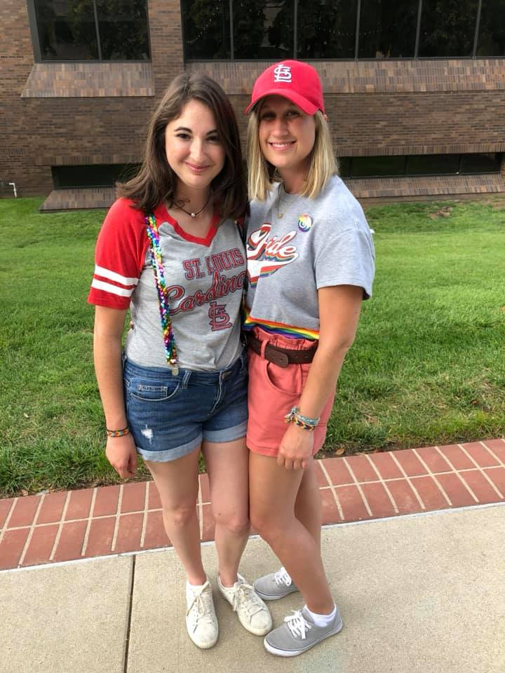

Jessica Mertz - How I Met My Wife
How we found each other
In 2019, two women were embarrassingly single.
They both tried to navigate the dating apps with the grace of ostriches on ice skates.
Luckily for us, those ostriches collided on a dating app called 'Her', and the rest was history!
Our First Date
After about a week of texting, we decided it was time to meet in person; and so we did!
Our first date was at Kaldi's Coffee on a Wednesday or something. We were both exhauste, as I had just come from work and
she had just taken a midterm exam, but we pushed through. What was supposed to be about an hour long turned into 3 hours,
and we still hadn't run out of things to talk about. As far as first dates go, it was pretty great!
>

The Early Days
Our first few months of dating were filled with variety of dates,
from going to dinner to attending hockey games. We went to concerts together,
watched the Blues win the Stanley Cup while screaming GLORIA, and spent a lot of time together.
Just as the Blues were experiencing thier first championship win, we were experiencing a lot of firsts together as well!

Moving in together
We moved in together because of necessity.
About a year into our relationship, this little thing called the corona virus came into our lives.
NBD. As the world came to a halt, we knew we didn't want to go through it alone,
so here Jackie came with her things and her cat to my aparatment.
My roommate at the time was very generous to allow her to stay with us.
It was honestly nice to know that none of us had to be completely alone in an incredibly lonely time.
We all adjusted after a few kinks got straightened out! Ultimately, we moved into our own apartment
sans roommate about 3 months later and started to build our home!
The engagement
Shortly before moving out of the apartment with my roommate, I bought a ring.
I set up a beautiful scene in Forest Park by the boathouse, bought some champaigne and sushi,
then asked my favorite person to marry me! She said yes! A few months later,
she proposed to me the same way her father had proposed to her mother!
The wedding
On April 18th, the weather was beautiful and we set up the perfect ceremony at the restaurant Vin de Set.
We had an intimate ceremony and dinner with our immediate families and closest friends.
It turned out to be a beautiful day!